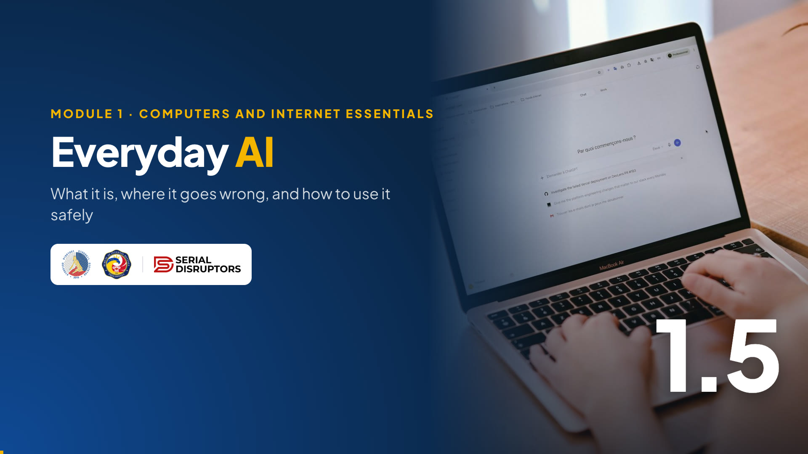

Module 1 · Computers and Internet Essentials
What artificial intelligence really is, where you already use it, where it goes wrong, and how to use it as a safe copilot.
Last topic of Module 1. AI is in the news every day, and some people feel excited, others worried. Both are fair.
Our goal is simple and practical: understand what AI is in plain words, notice where we already use it, learn its weak spots, and follow one firm rule about confidential data. Then Lab 1 Part C, a quick check of your whole Lab 1 folder, and the Digital Foundations Quiz, worth 10% of the course.
Warm-up · type a number in the chat
Ask them to count how many of the six they used this week and type the number. Most will say four to six.
Then reveal: all six use AI. The spam filter, the traffic colors on the map, face unlock, the next video suggestion, translation and chatbots. So AI is not only ChatGPT; it's been quietly helping us for years. Ask: "Which one would you miss most if it disappeared?"
In this topic
Software that learns patterns from examples, and what it is not.
Name common uses, and its weak spots: hallucinations and bias.
Ask, check and edit, and never paste confidential or taxpayer data.
Three goals: explain, spot, use safely.
Reassure the group: you don't need math or programming for this. If you can explain how a child learns to tell a ripe mango from an unripe one, you can explain AI. Mention the plan: about 10 minutes of ideas, 7 minutes of lab, then the quiz that closes Module 1.
The big idea
Thousands of mango photos labelled "ripe" or "not ripe".
Color, spots, shape: what "ripe" usually looks like.
"Ripe, 92% sure." A guess, not a guarantee.
Use the mango analogy. A child doesn't memorize a rulebook for ripeness; she sees many mangoes and learns. AI does the same with data: examples in, pattern learned, guesses out.
Point to the phone photo: your phone's face unlock learned your face from a few scans and now guesses "it's you" every time. Stress the last box: AI gives a guess with a confidence, not a certainty. That one idea explains why we must always check AI's work.
Everyday AI
Learned what junk and scam emails look like, and moves them out of your inbox.
Predicts traffic from phones on the road and suggests a faster route to work.
Recognizes your face, even with new glasses or a different haircut.
Suggests the next video, song or product based on what you watched or bought.
Turns English into Filipino or Cebuano and back, by learning from translated text.
ChatGPT, Copilot, Gemini, Meta AI: they write and answer in plain language.
Go through the six quickly. For each, ask "what examples did it learn from?" Spam filter: millions of emails people marked as spam. Maps: location data from phones in traffic. Recommendations: what millions of people watched next.
The last card, chatbots, is the newest kind, called generative AI: it creates new text or images. That's the one we'll use in the lab, and the one that needs the most care at work.
Clearing up myths
Movies show AI as robots with feelings. Real AI is software that predicts. A chatbot sounds confident and polite because it learned from how people write, not because it understands or cares.
The most important line for the office: AI is not an official source. If it tells you a tax rule or a deadline, you still confirm on the official BIR website or with your section. Ask: "Who's worried AI will take their job?" Reassure them: people who use AI well, and check it, become more valuable.
Where AI goes wrong
AI can invent facts that sound real: a law number that doesn't exist, a fake quote, a wrong deadline, a website that was never made.
AI learns from human examples, including our unfair habits. A translator may turn "siya" (he or she) into "he" for a doctor and "she" for a nurse.
Hallucination is the funny word for a serious problem: AI fills gaps with confident inventions. Lawyers abroad have been sanctioned for filing AI-written briefs that cited court cases that didn't exist. In our work, an invented regulation number in a letter to a taxpayer would be embarrassing and harmful.
Bias comes from the examples. If most of the data is foreign or skewed, the answers will be too. Ask: "Has an app ever misunderstood your Bisaya?"
Watch · 4½ minutes
A basket of mangoes, a confident wrong answer and one firm rule: see what AI really is, where it goes wrong, and how to use it as a safe copilot at work and at home.

4:37Introduce the video in one or two sentences, then read the While watching task aloud so everyone knows what to look for.
Press → to open the video full screen. In Zoom or Meet, share this tab with computer sound turned on.
Space or K plays and pauses (or click the video). C turns captions on or off; the speed button offers 1.25× and 0.85×. The arrows still move between slides, and the video pauses when you leave this slide.
Length 4:37. Pause anywhere to take a question; captions stay on screen for anyone without sound.
After the video, go back to the While watching task: ask two or three people for their answers.
The one rule at work
Why? What you type into a free AI tool may be stored, reviewed by the company, and used to improve the tool, depending on its settings. Once pasted, you can't take it back.
Don't
Do
The name and TIN above are fictional samples.
This is the most important slide of the topic for BIR personnel. Connect it to 1.4: taxpayer information is sensitive personal information under the Data Privacy Act.
Show the difference: the "don't" prompt sends a real person's data to an outside company. The "do" prompt gets the same help using blanks, and you fill in the details yourself, offline, in your office system. Rule of thumb: if you wouldn't post it on Facebook, don't paste it into a public AI. Follow your office's policy on approved tools.
AI as a copilot · you are still the pilot
A copilot helps, but the pilot lands the plane. AI can give you a first draft in seconds; you make it correct, fair and appropriate.
Read a few examples from each side. Ask: "Which of these would save you the most time?" Walk through the four steps at the bottom: ask, check, edit, own it. We'll practise all four in Module 2 when we draft a letter with AI help. Today's lab only covers the first step.
Lab 1 · Part C · Everyday AI
Click the timer for 7 minutes. Demo once: open Copilot or Gemini, type the prompt, copy the answer, paste into Notepad, add "My note:", then Ctrl+S into 02 AI Responses.
Some tools ask you to sign in; that's fine with a personal account, or try another tool. The "My note" line is the copilot habit: you read and judged it. If someone gets an error or a refusal, they can use one of the other topics. Ask for "Done C" in the chat.
Lab 1 · File Management and Everyday AI
DPE Lab 1 - Juan Dela Cruz
├ 01 Screenshots
│ ├ 2026-11-03 Screenshot - BIR Website.png
│ └ 2026-11-03 Note - Practice.txt
└ 02 AI Responses
├ 2026-11-03 AI Response - Organizing Files.txt
└ 2026-11-03 Note - Practice.txt
(dates are samples)
This is the Lab 1 graded output from the syllabus: a master folder, at least two clearly named sub-folders, one screenshot or image in a sub-folder, and one text document with an AI response.
Ask three or four participants to share their screen and open the master folder in File Explorer. Praise good file names. If anyone is missing a part, give them two minutes while you set up the quiz. If your office collects outputs, they can right-click the master folder and compress it to a ZIP file before submitting.
Module 1 assessment · 10% of the course
Computer terms, file management, safe browsing, everyday AI.
One best answer, A to D.
Write 1 to 10 with your letters, or use the form your facilitator shares.
Two items per slide; we discuss each answer together.
No pressure: everything on it was covered in Topics 1.1 to 1.5.
The Digital Foundations Quiz is worth 10% of the course. Ten items, one point each.
If you are collecting answers through a form, share the link now and give about 8 minutes before revealing. Otherwise, ask them to write 1 to 10 with their answers on paper or in a text file, and send them privately in the chat. Then go through the next five slides, two items each, clicking options to reveal the explanation.
Digital Foundations Quiz · items 1 and 2
Item 1
Item 2
Item 1: B, a spreadsheet program is application software. Item 2: A, input.
Click the correct option first, then any common wrong answer to show its explanation. Quick reminder of the jeepney from 1.1: hardware is the jeep, software is the route, peopleware is the driver and passengers. Ask a volunteer to give one more example of input hardware from their desk.
Digital Foundations Quiz · items 3 and 4
Item 3
Item 4
Item 3: C, the YYYY-MM-DD Type - Subject pattern. Item 4: B, the Recycle Bin.
On item 4, remind them of the exceptions from 1.2: Shift+Delete and deleting from most flash drives or shared drives skip the Recycle Bin. And Ctrl+Z right after a delete also brings the file back.
Digital Foundations Quiz · items 5 and 6
Item 5
Item 6
Item 5: C, the domain bir.gov.ph. Item 6: B, site:gov.ph filetype:pdf.
On item 5, recall the fake "www.bir.gov.ph.claim-refund.site" example: the real owner is whatever sits just before the first single slash. On item 6, many will pick D; explain that quotes search for that exact phrase, which almost no page contains.
Digital Foundations Quiz · items 7 and 8
Item 7
Item 8
Item 7: C. Item 8: C, the passphrase.
Two Cs in a row is a good moment to say: don't look for letter patterns, read the options. On item 8, remind them the sample passphrase is only an example; they should create their own, and turn on MFA too. On item 7, the report goes to the bank or e-wallet's official hotline and to CICC 1326.
Digital Foundations Quiz · items 9 and 10
Item 9
Item 10
Item 9: A, the spam filter. Item 10: B, a generic template you check and edit.
Ask everyone to count their score out of 10 and, if you're collecting by chat, send it privately. Answer key for your records: 1 B · 2 A · 3 C · 4 B · 5 C · 6 B · 7 C · 8 C · 9 A · 10 B. Congratulate the group; Module 1 is done.
Recap · Topic 1.5 and Module 1
AI finds patterns in examples and makes guesses. It's in your spam filter, maps and phone.
It can hallucinate and copy bias. Check facts against official sources.
Never paste confidential or taxpayer data. Ask, check, edit, own it.
Next · Module 2 · Word Processing, starting with 2.1 Application Navigation and File Handling. Keep your Lab 1 folder: we'll save Module 2 files the same way.
Summarize Topic 1.5: understand, doubt wisely, protect. Then close Module 1: we named the parts of a computer system, organized our files, searched smartly, stayed safe, and met AI.
Bridge to Module 2: "Next we open the word processor and build a real letter, the Invitation to the Digital Skills Workshop, using everything from today: good file names, safe habits, and AI as a copilot." Take a short break if the schedule allows. Daghang salamat!